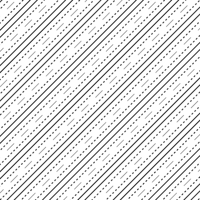
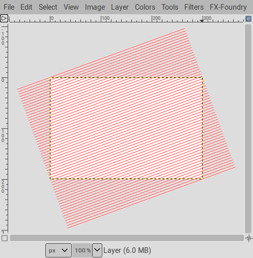
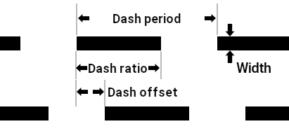

This script/plug-in produces nice and clean hatchings. Complex and preset hatchings can be achieved with a configuration file.

The menu entry for the script is Filters>Render>Patterns>Hatching...
angle and a spacing.
The lines are added to a path and the path is stroked in Line mode using the foreground color.
The lines can be made of dashes. There are five parameters:
width (or thickness) of the line. This width can be:
100% being the width of the spacingdash period: the length between the beginning of two consecutive dashes. The dash period is expressed as
a multiple of the line width.dash ratio: the ratio of the length of the drawn dash to the dash period. This is expressed as a percentage,
with 0% making an invisible line (or sparsely dotted, depending on line endings), and 100% making a continuous line.dash offset: the shift of the beginning of the drawn dash. This is expressed as a percentage
of the dash period with, 0% making the first dash begin at the beginning of the base line. If there is a single line
specification the dash offset is not important, it is best used to shift the dashes of one group of lines relative to
the others.cap type: how the dash are terminated. There are the same options as the “Cap Style” used in Edit>Stroke path.
Note that “round” and “square” caps are added to the actual lenght of the dash, so a dash of length 0 will appear as a circle with round caps and a square with square caps. In other words, dash period and dash offset don’t take them in account. “Square” caps are provided for completeness and aren’t very useful here
since their appearance is the same as “butt”.
In the example above:
width is 20pxdash period is 10, so it it is: width20px × 10 = 20px × 10 = 200pxdash ratio is 60%, so the dashes are: 200px × 60% = 120px20%,
so its offset is: 200px × 20% = 40px.Keep in mind that all these values are related, and increasing/decreasing the width of the lines scales up/down everything else accordingly. In addition, using a relative line width makes the hatching auto-scale with the spacing.
The script is started by Filters>Render>Pattern>Hatching...
This script requires Gimp 2.10 or later.
The first two styles in the list correspond to hatchings where all lines are identical and take all their dash parameters from the values in the dialog. One style uses lines with an absolute width, and the other uses a relative width.
Styles are convenient ways to keep together hatching parameters:
A style can contain several dash patterns, that are applied to lines in a round robin fashion. For instances, with three patterns
Parameters are defined using a hierarchy:
Personal styles can be defined using a configuration file.
The configuration file should be put in the same directory as the plugin.
Gimp creates the plugin dialog from data obtained by a “registration” process.
This registration process occurs when Gimp notices a new plugin executable, or when an already registered executable changes (according to the file change date). Changing the list of styles in the dialog requires Gimp to update its registration data, but since the plugin file itself has not changed Gimp will not notice it.
You can force Gimp to re-acquire the registration data using one the three methods below:
pluginrc file in the Gimp profile, locating the line starting with
(plug-in-def that bears the plugin file name, and delete the file contents from that line up to
and not including the next (plug-in-def.pluginrc file, but this makes Gimp re-run all the plugins for registration the next time it starts.This is only necessary if you add, delete, or rename a style, otherwise changes in a style are taken in account instantly (you won’t even need to restart Gimp for this).
The configuration files follows the JSON format. This format is very popular to exchange structured
data and is well documented on the Internet. JSON syntax checkers are available online. ofn-hatching
only looks for specific keys, other keys can be used, for instance to hold comments (there is no provision
for comments in JSON).
The configuration file contains a single JSON object. This object’s keys are Style names, and the corresponding values are Style objects. Configuration objects
All keys in a Style are optional, and the values are numeric unless stated otherwise:
A first group of keys pertain to the style itself:
order: a numeric sort order. This sort order determines the order of the style in the style selector drop-down.
Styles with the same order value are sorted alphabetically. Styles without an order are assigned the 99 value.angle: the numeric angle. If left unspecified the angle from the parameters dialog will be used.spacing: the numeric angle. If left unspecified the angle from the paramaters dialog will be used.dashes: a list of DashPattern objects, in the order in which groups should be rendered.
If this list is missing or empty, it is assumed to contains a single DashPattern with all default values.A second group sets default values for the DashPattern objects:
widthType: the absolute or relative width. A value of 0 or "ABSOLUTE" or a missing value means an absolute width,
any other numeric value or "RELATIVE" means a relative width.relWidth: a relative width valueabsWidth: an absolute width valuedashPeriod: the dash perioddashRatio: the dash ratiodashOffset: the dash offsetcapType: the cap endings. Possible values are "BUTT" or 0, "ROUND" or 1, "SQUARE" or 2.For all keys except widthType, a missing key or a key set to null are given the value of the corresponding parameter
in the input dialog.
Dash pattern objects set the rendering of the groups of lines. They can contains the following keys:
widthType: the absolute or relative width. A value of 0 or "ABSOLUTE" or a missing value means an absolute width,
any other numeric value or "RELATIVE" means a relative width.relWidth: a relative width valueabsWidth: an absolute width valuedashPeriod: the dash perioddashRatio: the dash ratiodashOffset: the dash offsetcapType: the cap endings. Possible values are "BUTT" or 0, "ROUND" or 1, "SQUARE" or 2.For all keys except widthType,
null is given the value of the corresponding parameter in the input dialog. This allows a Style
to define some fixed value for most DashPattern while having some dash patterns to use the value from the input dialog.A bad configuration file can make the plugin unable to register. You can check your configuration file using the plugin itself:
/path/to/interpreter/python ./ofn-hatching.py ofn-hatching.json [dummy dialog inputs]
The dialog inputs can be provided as positional parameters, in the order:
angle, spacing, absWidth, relWidth, dashPeriod, dashRatio, dashOffset. Unspecified values
are replaced by default values, respectively: 25, 10, 3, 40, 100, 60, 30.
python ./ofn-hatching.py ofn-hatching.json 30 20 5 50
This calls every style in the configuration with dummy dialog parameters, and lists the final result:
Reading configuration file ./ofn-hatching.json
Configuration file ./ofn-hatching.json read successfully
Using: angle: 25.0, spacing: 10.0, absWidth: 3.0, relWidth: 40.0,
dashPeriod: 100.0, dashRatio: 60.0, dashOffset: 30.0
*---
Simple lines, absolute width: Angle: 25, Spacing: 10, Dashes: 1
{period: 100, ratio: 60, offset: 30, width: 3, capType: Butt}
*---
Simple lines, relative width: Angle: 25, Spacing: 10, Dashes: 1
{period: 100, ratio: 60, offset: 30, width: 4.0, capType: Round}
*---
4-phase pseudo random hatching, absolute: Angle: 25, Spacing: 10, Dashes: 4
{period: 100, ratio: 60, offset: 0, width: 3, capType: Butt}
{period: 100, ratio: 60, offset: 25, width: 3, capType: Butt}
{period: 100, ratio: 60, offset: 75, width: 3, capType: Butt}
{period: 100, ratio: 60, offset: 50, width: 3, capType: Butt}
*---
4-phase pseudo random hatching, relative: Angle: 25, Spacing: 10, Dashes: 4
{period: 100, ratio: 60, offset: 0, width: 4.0, capType: Butt}
{period: 100, ratio: 60, offset: 25, width: 4.0, capType: Butt}
{period: 100, ratio: 60, offset: 75, width: 4.0, capType: Butt}
{period: 100, ratio: 60, offset: 50, width: 4.0, capType: Butt}
*---
Cap styles: Angle: 25, Spacing: 10, Dashes: 3
{period: 100, ratio: 60, offset: 0, width: 3, capType: Butt}
{period: 100, ratio: 60, offset: 33, width: 3, capType: Round}
{period: 100, ratio: 60, offset: 66, width: 3, capType: Square}
*---
Complex: Angle: 45, Spacing: 10, Dashes: 5
{period: 20, ratio: 100, offset: 0, width: 2.0, capType: Butt}
{period: 4, ratio: 50, offset: 0, width: 2.0, capType: Butt}
{period: 100, ratio: 50, offset: 0, width: 3, capType: Butt}
{period: 4, ratio: 50, offset: 0, width: 2.0, capType: Butt}
{period: 20, ratio: 100, offset: 0, width: 2.0, capType: Butt}
*---
Simple: Angle: 25, Spacing: 10, Dashes: 2
{period: 10, ratio: 60, offset: 30, width: 3, capType: Butt}
{period: 10, ratio: 60, offset: 50, width: 3, capType: Butt}